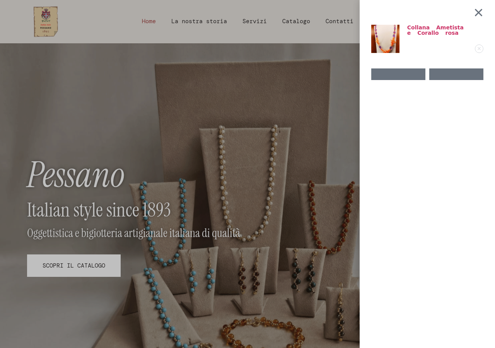
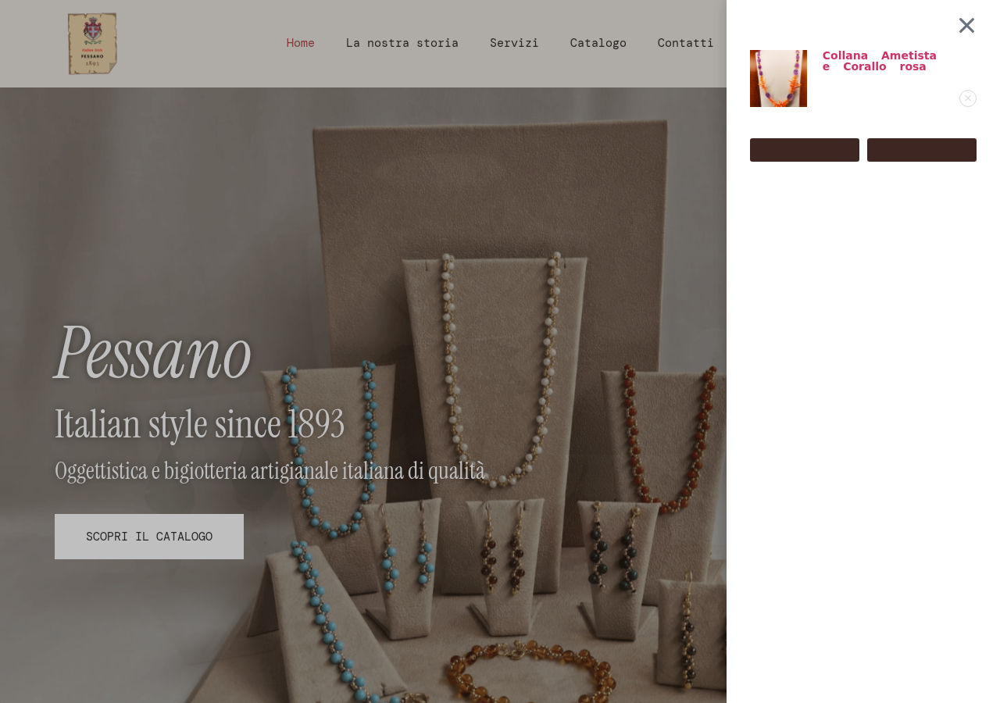

I colori del pannello carrello erano illeggibili: bottoni grigi su sfondo bianco e testo quantità quasi invisibile. Ora i bottoni sono nel colore del sito e tutto il testo è ben leggibile.
Aprendo il pannello del carrello (cliccando sull'icona in alto a destra), i due bottoni in fondo erano di un grigio sbiadito, quasi invisibili sullo sfondo bianco. Anche il numero dei pezzi ("1 ×") era scritto in un grigio chiarissimo, praticamente illeggibile.

Abbiamo corretto i colori del pannello carrello: i bottoni ora sono nello stesso marrone scuro usato nel resto del sito, con testo bianco ben leggibile. Il numero dei pezzi è ora in colore scuro. Il pulsante per rimuovere un prodotto è visibile e cambia colore al passaggio del mouse.

| Campo | Valore |
|---|---|
| Server | athena (Cloudways) |
| Path | /home/master/applications/njtxuppngd/public_html |
| URL | wordpress-1174648-6105957.cloudwaysapps.com |
| Scenario | Bug fix |
| Iterazioni | 1 |
| Verdict | FIXED |
Il mini-cart sidebar di Elementor usava colori di default non personalizzati, mentre il resto del tema aveva override specifici per WooCommerce.
Il child theme aveva già override per i bottoni WooCommerce generici (.woocommerce .button.alt) ma mancavano quelli specifici per il widget mini-cart di Elementor (.elementor-menu-cart__footer-buttons). Aggiunto CSS con selettori specifici per coprire il sidebar cart.